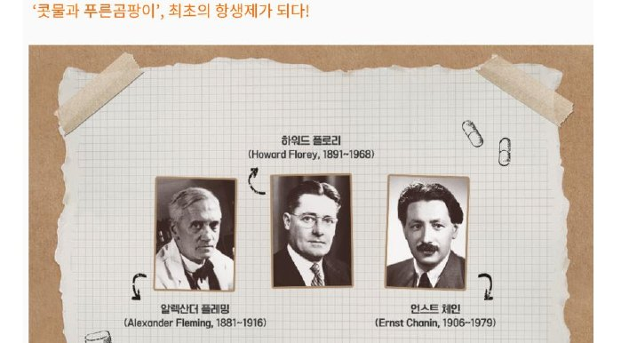
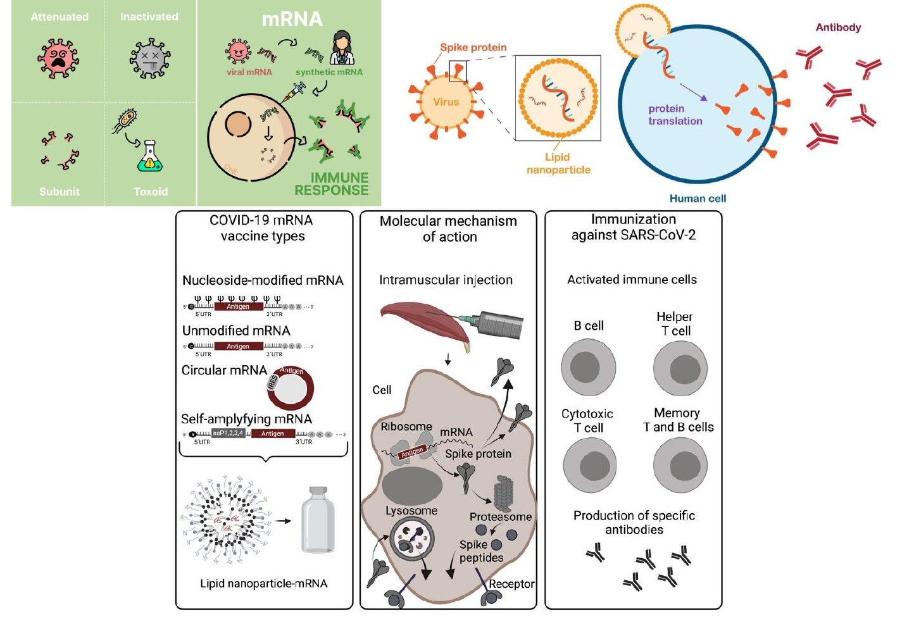
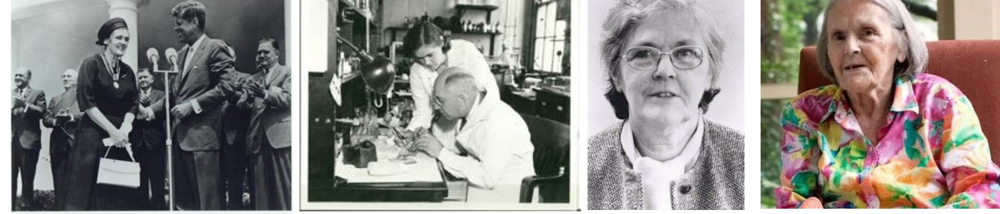
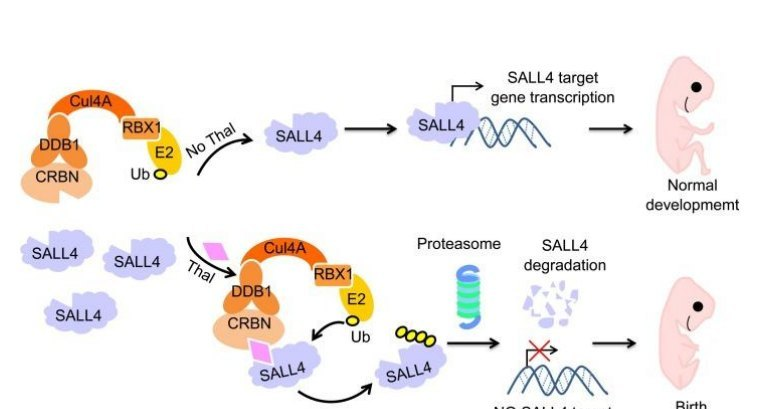
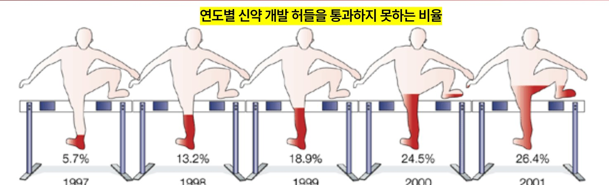

| 교수님의 8개 질문 | 한 줄 답 | PART |
|---|---|---|
| 누가 신약을 개발하나? | 개인 과학자 → 제약회사 → 스타트업 | 02 |
| 모든 신약개발은 성공하나? | 대부분 실패 (“실패하기 위해 존재”) | 03 |
| 왜 허가를 못 받나? | 효능 부족 · 안전성 · 상업성 | 03 |
| 실패하면 어떻게 되나? | 기업 손실 · 약화 사고 | 03 |
| 왜 어렵나? | 쉬운 표적 소진 · 복잡한 질병 · 높은 기준 | 04 |
| 누가 control 하나? | FDA (한국 = 식약처) | 05 |
| 규정은 누가 만들었나? | 비극이 날 때마다 법 개정 | 06 |
| 규정은 영원한가? | 아니! (FDA 현대화법 2.0) | 06 |
| 주제 | 정답 포인트 (교수님 해설) |
|---|---|
| 허들 | 통과 못하는 비율 증가 추세 · 환자 모집 시간·비용 증가 |
| FDA 승인 | 전임상 → IND (NDA ✗) · 라벨링 후 시설 실사 · 4상 |
| 헬싱키 | 치료적·비치료적 연구 원칙. “인간 존중·이익·정의”는 벨몬트 |
| 벨몬트 | 터스키기·Acres of Skin·유대인 병원 → 벨몬트로 이어짐 피부 화학물질 = Acres of Skin(감옥), 노인 암세포 = 유대인 병원 |
| 탈리도마이드 | 지금도 사용 중(다발성 골수종) · 임부 금기 · COVID 연구 · 켈시 박사 |
| 엘릭서 | DEG(부동액) → 신장독성 (간독성 ✗) |
| A·B 약물 | 플레밍: 콧물 라이소자임 → 페니실린 / 정답은 설파닐아마이드 |
| 연도 | 누가 | 무엇을 |
|---|---|---|
| 1922 | 플레밍 | 자기 콧물에서 라이소자임 발견 (병원균엔 무력) |
| 1928 | 플레밍 | 푸른곰팡이가 항균물질 생산 발견 (1929 논문, 주목 못 받음) |
| 1939 | 플로리·체인 | 안정적 제조법 고안 → 환자 적용 |
| 1943 → 1945 | 공장 | 대량생산 → 세 사람 노벨상 공동 수상 |

| 페니실린 | 설파제 | |
|---|---|---|
| 출처 | 곰팡이 (천연물) | 합성 염료 연구 |
| 발견 | 우연한 관찰 | 체계적 스크리닝 |
| 의미 | 최초의 항생제 | 최초의 합성 항균제 |
| 회사 | 핵심 연도 | 최초/특징 |
|---|---|---|
| Merck (독일) | 1668 약국 · 1827 | 최초의 제약회사 (천사약국) · 알칼로이드(모르핀) 제조·판매 |
| GSK | 1715 · 1842 · 1859 | 1842 최초 특허 기반 의약품 · 1859 최초 의약품 전용 공장 |
| Pfizer | 1849 | 독일 이민자 2명, 정밀화학 → 남북전쟁(진통제·소독제)으로 급성장 |

| 유형 | 내용 |
|---|---|
| 개발 단계 | 안전성 역치 + “표준요법보다 낫다”는 증거 필요 (그냥 효과 있음 ✗) |
| 승인 취소 | 바이옥스(1999 승인) — 연매출 2.7조 → 심혈관 부작용 88,000명·사망 33,000 → 취소 |
| 상업화 실패 | 팔리지 않음 (유방암 항암제 1000억 후 매각, 팩티브 해외 부진) |
| 생긴 것 | 아직 없던 것 (한계 3) |
|---|---|
| 최초로 “신약(new drug)” 판매 전 안전성 승인 요구 (NDA) | ① 안전의 정의가 없음 |
| 원칙: 이득 > 위험 | ② NDA 제출 후 60일 내 이의 없으면 자동 판매 |
| 화장품·의료기기까지 확대 | ③ 유효성 입증 불필요 |


| 구분 | 이유 | 쉽게 |
|---|---|---|
| 기술적 | 신약이 될 만한 것 이미 많이 나옴 | 낮게 달린 열매는 다 땄다 |
| 메커니즘이 복잡한 질병 (예: 치매) | 원인이 여러 개 | |
| Genomics·proteomics → 질병 관련성 검증 안 된 타겟 | 임상에서 좌초 | |
| 모순: 스크리닝 속도 ↑가 전체를 더디게 | 후보만 쏟아지고 검증 병목 | |
| + α | 환자의 신약 기대수준 ↑ | |
| 허가당국 안전성 신중 + 확실한 약효 요구 | ||
| 승인돼도 상업적 성공 가능성 ↓ | 투자 꺼림 |
| # | 허들 | 누가 판단 |
|---|---|---|
| 1 | 안전성 (Safety) | 허가 당국 (FDA·식약처) |
| 2 | 유효성 (Efficacy) | |
| 3 | 품질 (Quality) | |
| 4 | 비용효과성 · 보험급여 “the fourth hurdle was the one to look out for” | 보험자 (한국: 심평원·건보공단) |

| 법 | 라벨 정직 | 안전성 | 유효성 | 사전승인 |
|---|---|---|---|---|
| 1906 순정식품의약법 | ✔ | ✘ | ✘ | ✘ |
| 1938 FD&C Act | ✔ | ✔ | ✘ | △ 60일 자동 |
| 1962 케파우버-해리스 | ✔ | ✔ | ✔ | ✔ |
| IRB 심의 수준 | 기준 (예) | 누가 |
|---|---|---|
| Full Board 정규 | 최소 위험 초과 (의약품, 가정폭력 연구) | 소집된 위원회 |
| Expedited 신속 | 최소 위험 (채혈, 음주 연구) | 위원장·지정자 |
| Exempt 면제 | 최소 위험 이하 (혈압, 교육 시험) | 위원장·지정자·직원 |
| Not Human Subject | 코드화된 자료 등 | IRB 직원 |
| 평가 기준 | 생긴 계기 | 법·문서 | 평가 기준 | 생긴 계기 | 법·문서 |
|---|---|---|---|---|---|
| 라벨 정직 | 엉터리 특허약 | 1906 순정식품의약법 | 피험자 보호 | 나치·터스키기 | 뉘른베르크·헬싱키·벨몬트 |
| 안전성 | 엘릭서 | 1938 FD&C Act | 속도·효율 | 느린 심사 | PDUFA·FDAMA |
| 유효성 + 사전승인 | 탈리도마이드 | 1962 케파우버-해리스 | 새 과학 반영 | 동물 대체 기술 | 현대화법 2.0 |
| # | 답 | 한 줄 해설 |
|---|---|---|
| 1 | O | 1796 우두 |
| 2 | X | 플로리·체인(1939) |
| 3 | X | 몸속에서 변한 설파닐아마이드 |
| 4 | O | 1668 천사약국 |
| 5 | O | 쉐링-플라우 연구소 |
| 6 | O | 심근경색·뇌졸중 |
| 7 | O | 2024 간독성 ✗ |
| 8 | X | 유효성 = 1962 |
| 9 | O | 동의·보호·종료의 자유 |
| 10 | O | 1972 → 1974 → 1979 |
| 11 | O | 질 유지 + 기간 단축 |
| 12 | X | 금지 ✗ 의무 폐지(허용) |